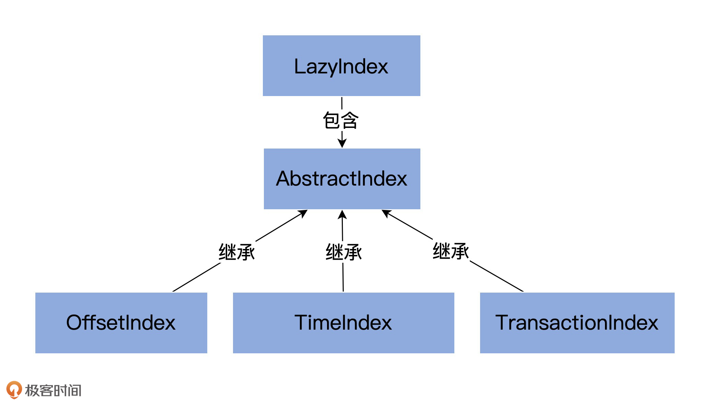
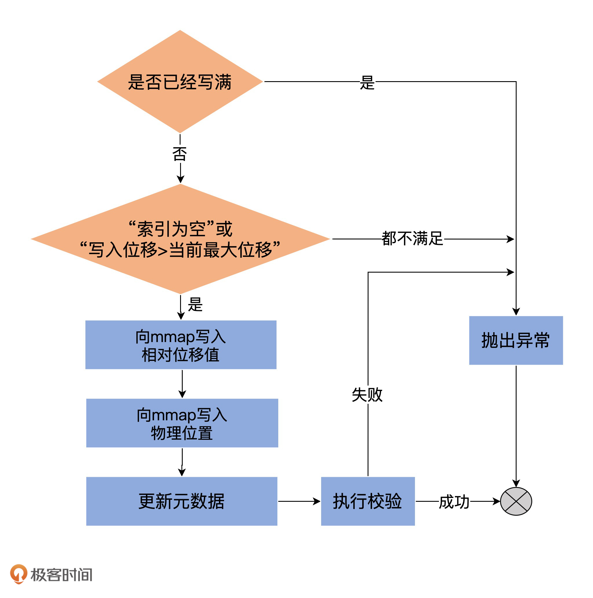
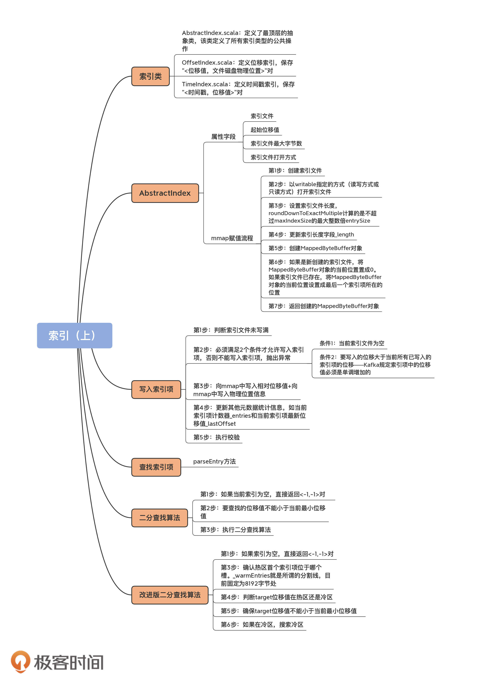

- 00 导读 构建Kafka工程和源码阅读环境、Scala语言热身.md
- 00 开篇词 阅读源码，逐渐成了职业进阶道路上的“必选项”.md
- 00 重磅加餐 带你快速入门Scala语言.md
- 01 日志段：保存消息文件的对象是怎么实现的？.md
- 02 日志（上）：日志究竟是如何加载日志段的？.md
- 03 日志（下）：彻底搞懂Log对象的常见操作.md
- 04 索引（上）：改进的二分查找算法在Kafka索引的应用.md
- 05 索引（下）：位移索引和时间戳索引的区别是什么？.md
- 06 请求通道：如何实现Kafka请求队列？.md
- 07 SocketServer（上）：Kafka到底是怎么应用NIO实现网络通信的？.md
- 08 SocketServer（中）：请求还要区分优先级？.md
- 09 SocketServer（下）：请求处理全流程源码分析.md
- 10 KafkaApis：Kafka最重要的源码入口，没有之一.md
- 11 Controller元数据：Controller都保存有哪些东西？有几种状态？.md
- 12 ControllerChannelManager：Controller如何管理请求发送？.md
- 13 ControllerEventManager：变身单线程后的Controller如何处理事件？.md
- 14 Controller选举是怎么实现的？.md
- 15 如何理解Controller在Kafka集群中的作用？.md
- 16 TopicDeletionManager： Topic是怎么被删除的？.md
- 17 ReplicaStateMachine：揭秘副本状态机实现原理.md
- 18 PartitionStateMachine：分区状态转换如何实现？.md
- 19 TimingWheel：探究Kafka定时器背后的高效时间轮算法.md
- 20 DelayedOperation：Broker是怎么延时处理请求的？.md
- 21 AbstractFetcherThread：拉取消息分几步？.md
- 22 ReplicaFetcherThread：Follower如何拉取Leader消息？.md
- 23 ReplicaManager（上）：必须要掌握的副本管理类定义和核心字段.md
- 24 ReplicaManager（中）：副本管理器是如何读写副本的？.md
- 25 ReplicaManager（下）：副本管理器是如何管理副本的？.md
- 26 MetadataCache：Broker是怎么异步更新元数据缓存的？.md
- 27 消费者组元数据（上）：消费者组都有哪些元数据？.md
- 28 消费者组元数据（下）：Kafka如何管理这些元数据？.md
- 29 GroupMetadataManager：组元数据管理器是个什么东西？.md
- 30 GroupMetadataManager：位移主题保存的只是位移吗？.md
- 31 GroupMetadataManager：查询位移时，不用读取位移主题？.md
- 32 GroupCoordinator：在Rebalance中，Coordinator如何处理成员入组？.md
- 33 GroupCoordinator：在Rebalance中，如何进行组同步？.md
- 特别放送（一）经典的Kafka学习资料有哪些？.md
- 特别放送（三）我是怎么度过日常一天的？.md
- 特别放送（二）一篇文章带你了解参与开源社区的全部流程.md
- 特别放送（五） Kafka 社区的重磅功能：移除 ZooKeeper 依赖.md
- 特别放送（四）20道经典的Kafka面试题详解.md
- 结束语 源码学习，我们才刚上路呢.md
04 索引（上）：改进的二分查找算法在Kafka索引的应用
你好，我是胡夕。今天，我来带你学习一下Kafka源码中的索引对象，以及改进版二分查找算法（Binary Search Algorithm）在索引中的应用。
为什么要阅读索引源码？
坦率地说，你在Kafka中直接接触索引或索引文件的场景可能不是很多。索引是一个很神秘的组件，Kafka官方文档也没有怎么提过它。你可能会说，既然这样，我还有必要读索引对象的源码吗？其实是非常有必要的！我给你分享一个真实的例子。
有一次，我用Kafka的DumpLogSegments类去查看底层日志文件和索引文件的内容时，发现了一个奇怪的现象——查看日志文件的内容不需要sudo权限，而查看索引文件的内容必须要有sudo权限，如下所示：
$ sudo ./kafka-run-class.sh kafka.tools.DumpLogSegments --files ./00000000000000000000.index
Dumping 00000000000000000000.index
offset: 0 position: 0
$ ./kafka-run-class.sh kafka.tools.DumpLogSegments --files 00000000000000000000.index
Dumping 00000000000000000000.index
Exception in thread "main" java.io.FileNotFoundException: 00000000000000000000.index (Permission denied)
......
看了索引源码之后，我才知道，原来Kafka读取索引文件时使用的打开方式是rw。实际上，读取文件不需要w权限，只要r权限就行了。这显然是Kafka的一个Bug。你看，通过阅读源码，我找到了问题的根本原因，还顺便修复了Kafka的一个问题（KAFKA-5104）。
除了能帮我们解决实际问题之外，索引这个组件的源码还有一个亮点，那就是它应用了耳熟能详的二分查找算法来快速定位索引项。关于算法，我一直觉得很遗憾的是，我们平时太注重算法本身，却忽略了它们在实际场景中的应用。
比如说，我们学习了太多的排序算法，但是，对于普通的应用开发人员来说，亲自使用这些算法完成编程任务的机会实在太少了。说起数组排序，你可能只记得调用Collections.sort方法了，但它底层应用了什么排序算法，其实并不清楚。
难得的是，Kafka的索引组件中应用了二分查找算法，而且社区还针对Kafka自身的特点对其进行了改良。这难道不值得我们好好学上一学吗？！话不多说，现在我们就开始学习吧。
索引类图及源文件组织架构
在Kafka源码中，跟索引相关的源码文件有5个，它们都位于core包的/src/main/scala/kafka/log路径下。我们一一来看下。
- AbstractIndex.scala：它定义了最顶层的抽象类，这个类封装了所有索引类型的公共操作。
- LazyIndex.scala：它定义了AbstractIndex上的一个包装类，实现索引项延迟加载。这个类主要是为了提高性能。
- OffsetIndex.scala：定义位移索引，保存“<位移值，文件磁盘物理位置>”对。
- TimeIndex.scala：定义时间戳索引，保存“<时间戳，位移值>”对。
- TransactionIndex.scala：定义事务索引，为已中止事务（Aborted Transcation）保存重要的元数据信息。只有启用Kafka事务后，这个索引才有可能出现。
这些类的关系如下图所示：

其中，OffsetIndex、TimeIndex和TransactionIndex都继承了AbstractIndex类，而上层的LazyIndex仅仅是包装了一个AbstractIndex的实现类，用于延迟加载。就像我之前说的，LazyIndex的作用是为了提升性能，并没有什么功能上的改进。
所以今天，我先和你讲一讲AbstractIndex这个抽象父类的代码。下节课，我再重点和你分享具体的索引实现类。
AbstractIndex代码结构
我们先来看下AbstractIndex的类定义：
abstract class AbstractIndex(@volatile var file: File, val baseOffset: Long, val maxIndexSize: Int = -1, val writable: Boolean) extends Closeable {
......
}
AbstractIndex定义了4个属性字段。由于是一个抽象基类，它的所有子类自动地继承了这4个字段。也就是说，Kafka所有类型的索引对象都定义了这些属性。我先给你解释下这些属性的含义。
- 索引文件（file）。每个索引对象在磁盘上都对应了一个索引文件。你可能注意到了，这个字段是var型，说明它是可以被修改的。难道索引对象还能动态更换底层的索引文件吗？是的。自1.1.0版本之后，Kafka允许迁移底层的日志路径，所以，索引文件自然要是可以更换的。
- 起始位移值（baseOffset）。索引对象对应日志段对象的起始位移值。举个例子，如果你查看Kafka日志路径的话，就会发现，日志文件和索引文件都是成组出现的。比如说，如果日志文件是00000000000000000123.log，正常情况下，一定还有一组索引文件00000000000000000123.index、00000000000000000123.timeindex等。这里的“123”就是这组文件的起始位移值，也就是baseOffset值。
- 索引文件最大字节数（maxIndexSize）。它控制索引文件的最大长度。Kafka源码传入该参数的值是Broker端参数segment.index.bytes的值，即10MB。这就是在默认情况下，所有Kafka索引文件大小都是10MB的原因。
- 索引文件打开方式（writable）。“True”表示以“读写”方式打开，“False”表示以“只读”方式打开。如果我没记错的话，这个参数应该是我加上去的，就是为了修复我刚刚提到的那个Bug。
AbstractIndex是抽象的索引对象类。可以说，它是承载索引项的容器，而每个继承它的子类负责定义具体的索引项结构。比如，OffsetIndex的索引项是<位移值，物理磁盘位置>对，TimeIndex的索引项是<时间戳，位移值>对。基于这样的设计理念，AbstractIndex类中定义了一个抽象方法entrySize来表示不同索引项的大小，如下所示：
protected def entrySize: Int
子类实现该方法时需要给定自己索引项的大小，对于OffsetIndex而言，该值就是8；对于TimeIndex而言，该值是12，如下所示：
// OffsetIndex
override def entrySize = 8
// TimeIndex
override def entrySize = 12
说到这儿，你肯定会问，为什么是8和12呢？我来解释一下。
在OffsetIndex中，位移值用4个字节来表示，物理磁盘位置也用4个字节来表示，所以总共是8个字节。你可能会说，位移值不是长整型吗，应该是8个字节才对啊。
还记得AbstractIndex已经保存了baseOffset了吗？这里的位移值，实际上是相对于baseOffset的相对位移值，即真实位移值减去baseOffset的值。下节课我会给你重点讲一下它，这里你只需要知道使用相对位移值能够有效地节省磁盘空间就行了。而Broker端参数log.segment.bytes是整型，这说明，Kafka中每个日志段文件的大小不会超过2^32，即4GB，这就说明同一个日志段文件上的位移值减去baseOffset的差值一定在整数范围内。因此，源码只需要4个字节保存就行了。
同理，TimeIndex中的时间戳类型是长整型，占用8个字节，位移依然使用相对位移值，占用4个字节，因此总共需要12个字节。
如果有人问你，Kafka中的索引底层的实现原理是什么？你可以大声地告诉他：内存映射文件，即Java中的MappedByteBuffer。
使用内存映射文件的主要优势在于，它有很高的I/O性能，特别是对于索引这样的小文件来说，由于文件内存被直接映射到一段虚拟内存上，访问内存映射文件的速度要快于普通的读写文件速度。
另外，在很多操作系统中（比如Linux），这段映射的内存区域实际上就是内核的页缓存（Page Cache）。这就意味着，里面的数据不需要重复拷贝到用户态空间，避免了很多不必要的时间、空间消耗。
在AbstractIndex中，这个MappedByteBuffer就是名为mmap的变量。接下来，我用注释的方式，带你深入了解下这个mmap的主要流程。
@volatile
protected var mmap: MappedByteBuffer = {
// 第1步：创建索引文件
val newlyCreated = file.createNewFile()
// 第2步：以writable指定的方式（读写方式或只读方式）打开索引文件
val raf = if (writable) new RandomAccessFile(file, "rw") else new RandomAccessFile(file, "r")
try {
if(newlyCreated) {
if(maxIndexSize < entrySize) // 预设的索引文件大小不能太小，如果连一个索引项都保存不了，直接抛出异常
throw new IllegalArgumentException("Invalid max index size: " + maxIndexSize)
// 第3步：设置索引文件长度，roundDownToExactMultiple计算的是不超过maxIndexSize的最大整数倍entrySize
// 比如maxIndexSize=1234567，entrySize=8，那么调整后的文件长度为1234560
raf.setLength(roundDownToExactMultiple(maxIndexSize, entrySize))
}
// 第4步：更新索引长度字段_length
_length = raf.length()
// 第5步：创建MappedByteBuffer对象
val idx = {
if (writable)
raf.getChannel.map(FileChannel.MapMode.READ_WRITE, 0, _length)
else
raf.getChannel.map(FileChannel.MapMode.READ_ONLY, 0, _length)
}
/* set the position in the index for the next entry */
// 第6步：如果是新创建的索引文件，将MappedByteBuffer对象的当前位置置成0
// 如果索引文件已存在，将MappedByteBuffer对象的当前位置设置成最后一个索引项所在的位置
if(newlyCreated)
idx.position(0)
else
idx.position(roundDownToExactMultiple(idx.limit(), entrySize))
// 第7步：返回创建的MappedByteBuffer对象
idx
} finally {
CoreUtils.swallow(raf.close(), AbstractIndex) // 关闭打开索引文件句柄
}
}
这些代码最主要的作用就是创建mmap对象。要知道，AbstractIndex其他大部分的操作都是和mmap相关。
我举两个简单的小例子。
例1：如果我们要计算索引对象中当前有多少个索引项，那么只需要执行下列计算即可：
protected var _entries: Int = mmap.position() / entrySize
例2：如果我们要计算索引文件最多能容纳多少个索引项，只要定义下面的变量就行了：
private[this] var _maxEntries: Int = mmap.limit() / entrySize
再进一步，有了这两个变量，我们就能够很容易地编写一个方法，来判断当前索引文件是否已经写满：
def isFull: Boolean = _entries >= _maxEntries
总之，AbstractIndex中最重要的就是这个mmap变量了。事实上，AbstractIndex继承类实现添加索引项的主要逻辑，也就是向mmap中添加对应的字段。
写入索引项
下面这段代码是OffsetIndex的append方法，用于向索引文件中写入新索引项。
def append(offset: Long, position: Int): Unit = {
inLock(lock) {
// 第1步：判断索引文件未写满
require(!isFull, "Attempt to append to a full index (size = " + _entries + ").")
// 第2步：必须满足以下条件之一才允许写入索引项：
// 条件1：当前索引文件为空
// 条件2：要写入的位移大于当前所有已写入的索引项的位移——Kafka规定索引项中的位移值必须是单调增加的
if (_entries == 0 || offset > _lastOffset) {
trace(s"Adding index entry $offset => $position to ${file.getAbsolutePath}")
mmap.putInt(relativeOffset(offset)) // 第3步A：向mmap中写入相对位移值
mmap.putInt(position) // 第3步B：向mmap中写入物理位置信息
// 第4步：更新其他元数据统计信息，如当前索引项计数器_entries和当前索引项最新位移值_lastOffset
_entries += 1
_lastOffset = offset
// 第5步：执行校验。写入的索引项格式必须符合要求，即索引项个数*单个索引项占用字节数匹配当前文件物理大小，否则说明文件已损坏
require(_entries * entrySize == mmap.position(), entries + " entries but file position in index is " + mmap.position() + ".")
} else {
// 如果第2步中两个条件都不满足，不能执行写入索引项操作，抛出异常
throw new InvalidOffsetException(s"Attempt to append an offset ($offset) to position $entries no larger than" +
s" the last offset appended (${_lastOffset}) to ${file.getAbsolutePath}.")
}
}
}
我使用一张图来总结下append方法的执行流程，希望可以帮你更快速地掌握它的实现：

查找索引项
索引项的写入逻辑并不复杂，难点在于如何查找索引项。AbstractIndex定义了抽象方法parseEntry用于查找给定的索引项，如下所示：
protected def parseEntry(buffer: ByteBuffer, n: Int): IndexEntry
这里的“n”表示要查找给定ByteBuffer中保存的第n个索引项（在Kafka中也称第n个槽）。IndexEntry是源码定义的一个接口，里面有两个方法：indexKey和indexValue，分别返回不同类型索引的<Key，Value>对。
OffsetIndex实现parseEntry的逻辑如下：
override protected def parseEntry(buffer: ByteBuffer, n: Int): OffsetPosition = {
OffsetPosition(baseOffset + relativeOffset(buffer, n), physical(buffer, n))
}
OffsetPosition是实现IndexEntry的实现类，Key就是之前说的位移值，而Value就是物理磁盘位置值。所以，这里你能看到代码调用了relativeOffset(buffer, n) + baseOffset计算出绝对位移值，之后调用physical(buffer, n)计算物理磁盘位置，最后将它们封装到一起作为一个独立的索引项返回。
我建议你去看下relativeOffset和physical方法的实现，看看它们是如何计算相对位移值和物理磁盘位置信息的。
有了parseEntry方法，我们就能够根据给定的n来查找索引项了。但是，这里还有个问题需要解决，那就是，我们如何确定要找的索引项在第n个槽中呢？其实本质上，这是一个算法问题，也就是如何从一组已排序的数中快速定位符合条件的那个数。
二分查找算法
到目前为止，从已排序数组中寻找某个数字最快速的算法就是二分查找了，它能做到O(lgN)的时间复杂度。Kafka的索引组件就应用了二分查找算法。
我先给出原版的实现算法代码。
private def indexSlotRangeFor(idx: ByteBuffer, target: Long, searchEntity: IndexSearchEntity): (Int, Int) = {
// 第1步：如果当前索引为空，直接返回<-1,-1>对
if(_entries == 0)
return (-1, -1)
// 第2步：要查找的位移值不能小于当前最小位移值
if(compareIndexEntry(parseEntry(idx, 0), target, searchEntity) > 0)
return (-1, 0)
// binary search for the entry
// 第3步：执行二分查找算法
var lo = 0
var hi = _entries - 1
while(lo < hi) {
val mid = ceil(hi/2.0 + lo/2.0).toInt
val found = parseEntry(idx, mid)
val compareResult = compareIndexEntry(found, target, searchEntity)
if(compareResult > 0)
hi = mid - 1
else if(compareResult < 0)
lo = mid
else
return (mid, mid)
}
(lo, if (lo == _entries - 1) -1 else lo + 1)
这段代码的核心是，第3步的二分查找算法。熟悉Binary Search的话，你对这段代码一定不会感到陌生。
讲到这里，似乎一切很完美：Kafka索引应用二分查找算法快速定位待查找索引项位置，之后调用parseEntry来读取索引项。不过，这真的就是无懈可击的解决方案了吗？
改进版二分查找算法
显然不是！我前面说过了，大多数操作系统使用页缓存来实现内存映射，而目前几乎所有的操作系统都使用LRU（Least Recently Used）或类似于LRU的机制来管理页缓存。
Kafka写入索引文件的方式是在文件末尾追加写入，而几乎所有的索引查询都集中在索引的尾部。这么来看的话，LRU机制是非常适合Kafka的索引访问场景的。
但，这里有个问题是，当Kafka在查询索引的时候，原版的二分查找算法并没有考虑到缓存的问题，因此很可能会导致一些不必要的缺页中断（Page Fault）。此时，Kafka线程会被阻塞，等待对应的索引项从物理磁盘中读出并放入到页缓存中。
下面我举个例子来说明一下这个情况。假设Kafka的某个索引占用了操作系统页缓存13个页（Page），如果待查找的位移值位于最后一个页上，也就是Page 12，那么标准的二分查找算法会依次读取页号0、6、9、11和12，具体的推演流程如下所示：

通常来说，一个页上保存了成百上千的索引项数据。随着索引文件不断被写入，Page #12不断地被填充新的索引项。如果此时索引查询方都来自ISR副本或Lag很小的消费者，那么这些查询大多集中在对Page #12的查询，因此，Page #0、6、9、11、12一定经常性地被源码访问。也就是说，这些页一定保存在页缓存上。后面当新的索引项填满了Page #12，页缓存就会申请一个新的Page来保存索引项，即Page #13。
现在，最新索引项保存在Page #13中。如果要查找最新索引项，原版二分查找算法将会依次访问Page #0、7、10、12和13。此时，问题来了：Page 7和10已经很久没有被访问过了，它们大概率不在页缓存中，因此，一旦索引开始征用Page #13，就会发生Page Fault，等待那些冷页数据从磁盘中加载到页缓存。根据国外用户的测试，这种加载过程可能长达1秒。
显然，这是一个普遍的问题，即每当索引文件占用Page数发生变化时，就会强行变更二分查找的搜索路径，从而出现不在页缓存的冷数据必须要加载到页缓存的情形，而这种加载过程是非常耗时的。
基于这个问题，社区提出了改进版的二分查找策略，也就是缓存友好的搜索算法。总体的思路是，代码将所有索引项分成两个部分：热区（Warm Area）和冷区（Cold Area），然后分别在这两个区域内执行二分查找算法，如下图所示：

乍一看，该算法并没有什么高大上的改进，仅仅是把搜寻区域分成了冷、热两个区域，然后有条件地在不同区域执行普通的二分查找算法罢了。实际上，这个改进版算法提供了一个重要的保证：它能保证那些经常需要被访问的Page组合是固定的。
想想刚才的例子，同样是查询最热的那部分数据，一旦索引占用了更多的Page，要遍历的Page组合就会发生变化。这是导致性能下降的主要原因。
这个改进版算法的最大好处在于，查询最热那部分数据所遍历的Page永远是固定的，因此大概率在页缓存中，从而避免无意义的Page Fault。
下面我们来看实际的代码。我用注释的方式解释了改进版算法的实现逻辑。一旦你了解了冷区热区的分割原理，剩下的就不难了。
private def indexSlotRangeFor(idx: ByteBuffer, target: Long, searchEntity: IndexSearchEntity): (Int, Int) = {
// 第1步：如果索引为空，直接返回<-1,-1>对
if(_entries == 0)
return (-1, -1)
// 封装原版的二分查找算法
def binarySearch(begin: Int, end: Int) : (Int, Int) = {
// binary search for the entry
var lo = begin
var hi = end
while(lo < hi) {
val mid = (lo + hi + 1) >>> 1
val found = parseEntry(idx, mid)
val compareResult = compareIndexEntry(found, target, searchEntity)
if(compareResult > 0)
hi = mid - 1
else if(compareResult < 0)
lo = mid
else
return (mid, mid)
}
(lo, if (lo == _entries - 1) -1 else lo + 1)
}
// 第3步：确认热区首个索引项位于哪个槽。_warmEntries就是所谓的分割线，目前固定为8192字节处
// 如果是OffsetIndex，_warmEntries = 8192 / 8 = 1024，即第1024个槽
// 如果是TimeIndex，_warmEntries = 8192 / 12 = 682，即第682个槽
val firstHotEntry = Math.max(0, _entries - 1 - _warmEntries)
// 第4步：判断target位移值在热区还是冷区
if(compareIndexEntry(parseEntry(idx, firstHotEntry), target, searchEntity) < 0) {
return binarySearch(firstHotEntry, _entries - 1) // 如果在热区，搜索热区
}
// 第5步：确保target位移值不能小于当前最小位移值
if(compareIndexEntry(parseEntry(idx, 0), target, searchEntity) > 0)
return (-1, 0)
// 第6步：如果在冷区，搜索冷区
binarySearch(0, firstHotEntry)
总结
今天，我带你详细学习了Kafka中的索引机制，以及社区如何应用二分查找算法实现快速定位索引项。有两个重点，你一定要记住。
- AbstractIndex：这是Kafka所有类型索引的抽象父类，里面的mmap变量是实现索引机制的核心，你一定要掌握它。
- 改进版二分查找算法：社区在标准原版的基础上，对二分查找算法根据实际访问场景做了定制化的改进。你需要特别关注改进版在提升缓存性能方面做了哪些努力。改进版能够有效地提升页缓存的使用率，从而在整体上降低物理I/O，缓解系统负载瓶颈。你最好能够从索引这个维度去思考社区在这方面所做的工作。

实际上，无论是AbstractIndex还是它使用的二分查找算法，它们都属于Kafka索引共性的东西，即所有Kafka索引都具备这些特点或特性。那么，你是否想了解不同类型索引之间的区别呢？比如位移索引和时间戳索引有哪些异同之处。这些问题的答案我会在下节课揭晓，你千万不要错过。
课后讨论
目前，冷区和热区的分割线设定在8192字节处，请结合源码注释以及你自己的理解，讲一讲为什么要设置成8192？
欢迎你在留言区畅所欲言，跟我交流讨论，也欢迎你把今天的内容分享给你的朋友。
© 2019 - 2023 Liangliang Lee. Powered by Vert.x and hexo-theme-book.